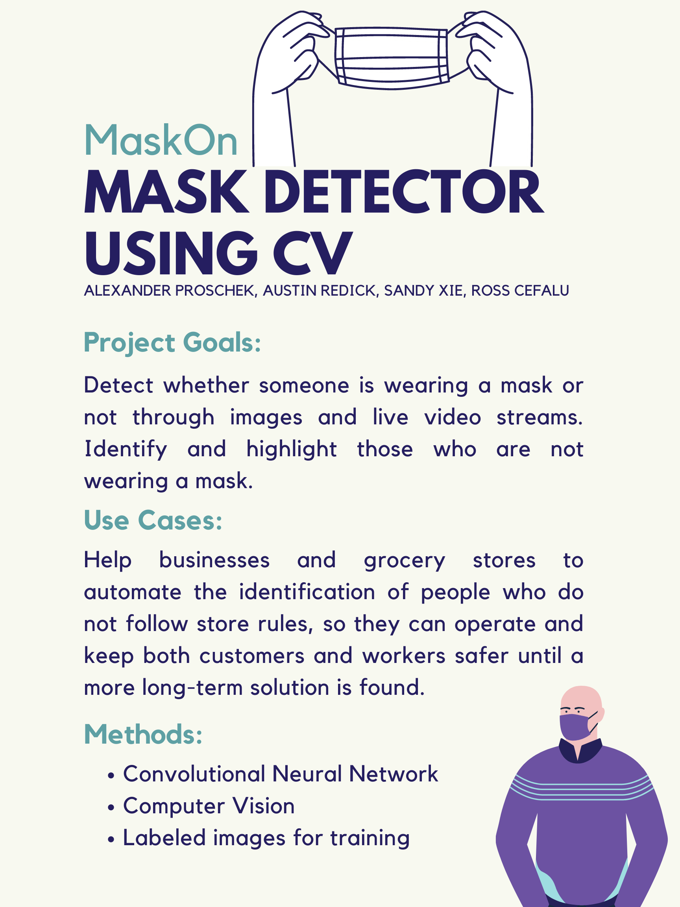

As Covid-19 and the restrictions around it all around the country have started to loosen up, we need to make sure that we don't allow another wave of infections to hit people all around the country again. One of the most effective ways of doing that is by mandating everyone to keep their masks on in case they have to come in proximity with other people. Since there currently is no national mandate for wearing masks in public spaces in the United States, more and more bussines from small to large have taken safety into their own hands. Enforceing and filtering out people who don't follow store requlations usually requires a lot of manpower though, so we have decided to come up with a Machine Learning ideas to reduce the humans needed to do this mundane task.
The idea of this project is to train a Computer Vision algorithm to detect faces in a video stream and determine who is - and more importantly - who is not wearing their mask in the store.
The desired outcome of this project is to create an algorithm that can take in a given video stream and highlight who is wearing a mask and who is not wearing a mask by displaying visual boxes over the video stream to indicate wether the person if correctly wearing their mask. These results could then be used to assess how well people in a given video feed are following CDC guidlines on mask wearing.
We plan to use:
The ideal outcome for our project would be for our algorithm to be both flexible in terms of video quality/camera angle/lighting/etc. but also very accruate. This would allow the algorithm to be applied to more use cases and would also mean it would not need special use cases or equipment to make work. If this could be achieved, the algorithm would allow resturants/stores/schools/etc. to monitor how well people are following mask guidelines without having to have people going around monitoring. This would greatly increase thw scalability of mask enforcement and also allow for data to be aggreated and problem areas addressed. Going forward, the next steps for our project is to beging compiling our datasets and begin training our initial algorithms in order to assess our approach. From there we will begin looking at the our supervised and unsupervised appraoches and address any challeneges as they come up.